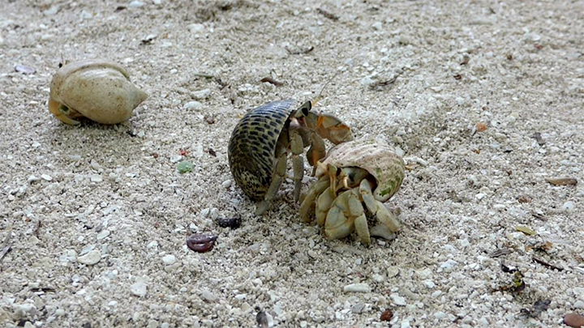

Hermit crabs are decapod crustaceans of the superfamily Paguroidea.
Most of the approximately 1,110 species possess an asymmetric abdomen concealed in a scavenged mollusc
shell.
As hermit crabs grow, they require larger shells. Since suitable intact gastropod shells are sometimes a limited resource, vigorous competition often occurs among hermit crabs for shells.
Hermit crabs with too-small shells cannot grow as fast as those with well-fitting shells, and are more likely to be eaten if they cannot retract completely into the shell.Therefore, as the hermit crab grows in size, it must find a larger shell and abandon the previous one.
You can read more about hermit crabs on Wikipedia.